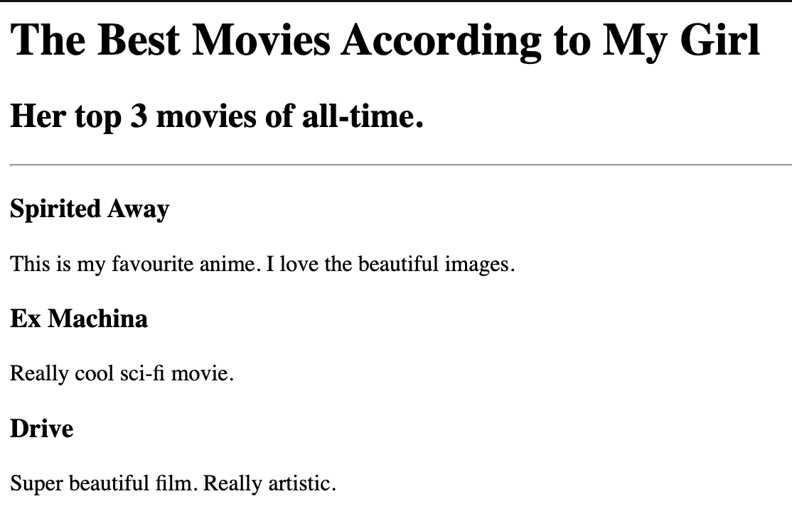

Hugh Henry's Web-Dev. Portfolio
Fun Projects
The Best Movies of Drama according to Hugh
My Top 3 movies of all time
- Gladiator: Mel steals everyone's heart with this masterpiece
- Braveheart: One of the best hero autobiographies
- Cinderella Man: Nothing compares to a man's love for his family
